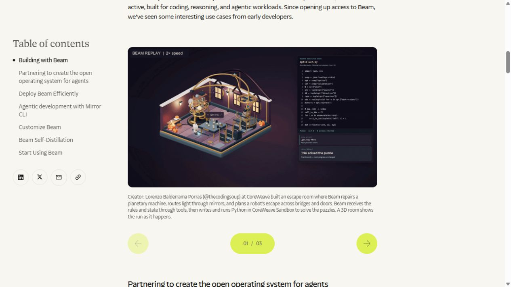

빔 코딩 AI, 이제 직접 내려받아 쓴다
AI 개발사 Reflection이 10월 16일 코딩 AI ‘Beam’의 모델 파일을 공개했다. 앞선 소개가 무엇을 만들었는지 알리는 단계였다면, 이번에는 개발자가 실제 파일을 받아 직접 운영하거나 수정할 수 있게 됐다. 공개 베타 API와 명령어 창에서 쓰는 개발 도구 Mirror도 함께 안내했다. 실제 배포 발표

같은 제품을 다시 다루는 이유는 공개 범위가 바뀌었기 때문이다. 회사가 보여 준 평가표를 읽는 데서 끝나지 않고, 자기 코드와 작업 조건으로 다시 시험할 수 있다. 모델 파일을 열어 쓰는 선택권과 그 파일을 실제로 돌릴 장비는 별개의 문제다.
예를 들어 작은 웹사이트의 날짜 입력 오류를 고친다고 해 보자. 원하는 수정 내용을 말하고, AI가 관련 파일을 찾게 한다. 변경 전 오류를 재현한 뒤 코드를 고치고 같은 시험을 다시 통과하는지 확인한다. Beam은 이런 코딩과 도구 사용을 겨냥하며, Mirror는 그 과정에서 파일과 명령어를 다루는 창구다.
모델과 작업 도구를 함께 공개했다
Beam 모델 카드는 글을 입력받아 글을 내보내는 모델이라고 설명한다. 전체 약 5,010억 개의 구성 요소 중 매번 약 230억 개를 골라 계산한다. 이 숫자는 학습된 숫자의 전체 규모와 실제 계산에 참여하는 양을 구분한 것이다. 한 번에 참고하는 자료는 최대 100만 토큰으로 안내한다.
큰 코드 묶음을 읽을 여지가 생겨도 오류가 자동으로 사라지는 것은 아니다. 모델이 관련 파일을 제대로 찾았는지, 요구하지 않은 곳까지 고쳤는지, 바뀐 코드가 실제로 작동하는지 확인할 시험이 필요하다. 코딩 AI의 답변을 읽는 일과 완성된 프로그램을 검수하는 일은 다르다.
그 검수 과정을 화면에 드러내는 도구가 Mirror CLI다. CLI는 버튼 중심의 앱 대신 명령어 창에서 조작하는 방식이다. 사용자가 작업을 설명하면 Mirror가 프로젝트 파일을 읽고 수정하고 명령어를 실행하며 각 단계를 보여 준다. 초기 베타이므로 명령과 동작은 업데이트에 따라 달라질 수 있다.
Mirror는 기본 수동 승인 모드에서 파일 수정과 명령 실행 등을 앞두고 사용자의 승인을 받는다. 안내에 따르면 승인할 때는 1 또는 Enter, 거절할 때는 2를 누른다. 내장 도구로 하는 파일 읽기와 검색은 별도 승인을 받지 않는다. 다만 ls처럼 내용을 확인하기만 하는 셸 명령도 수동 승인 대상이다. 설명만 듣고 무조건 자동 모드로 전환하기보다 무엇을 실행하려는지 읽는 편이 적합하다.
중요한 차이가 하나 더 있다. 이 승인 화면은 컴퓨터를 격리하는 보안 장치가 아니다. 승인한 명령은 사용자 계정의 권한으로 실행된다. 예를 들어 작업 폴더를 잘못 지정하면 필요한 파일을 건드릴 수 있다. 공식 안내도 수동 승인을 안전한 격리 환경과 혼동하지 말라고 설명한다.

남의 시연에서는 결과와 수정 흔적을 함께 본다
Reflection의 배포 글에는 초기 이용자들이 만든 퍼즐 공간과 웹 장면, 모바일 게임 사례가 실려 있다. 그중 한 사례는 하나의 HTML 파일로 정원 장면을 만든 뒤 한 줄을 수정했다고 기록했다. 화면이 멋져 보이는 것뿐 아니라 처음 결과에 수정이 필요했다는 점도 함께 볼 수 있는 자료다.
이 사례들은 회사가 소개한 이용자 작업이다. 독립적인 대규모 비교 시험이나 편집부가 같은 조건으로 반복 실행한 결과와는 구분된다. 영상을 볼 때는 입력문, 실제 실행 화면, 오류가 난 부분, 사람이 개입한 시점을 함께 보면 제품의 능력을 더 정확하게 이해할 수 있다.
우리의 시험을 설계한다면 문제 하나부터 고정하면 된다. 예를 들어 ‘예약 인원을 바꾸면 합계와 확인서가 함께 바뀌도록 고쳐 달라’는 작은 과제를 정한다. 원래 파일을 보관하고, 변경 후 1명·3명·4명과 잘못된 입력을 차례로 넣는다. 이는 검증 방법의 예시이며 이번 기사에서 실행한 성능 시험은 아니다.
무료로 받는 파일도 실행에는 비용이 든다
Hugging Face의 실행 안내는 압축된 NVFP4 파일도 약 280GB라고 설명한다. 숫자를 더 정밀하게 저장한 BF16 형식은 약 1TB다. NVFP4는 모델의 일부 숫자를 적은 비트로 저장해 용량을 줄이는 형식이며, 이를 빠르게 계산할 수 있는 장비도 필요하다.
파일을 메모리에 넣는 것으로 준비가 끝나지 않는다. 긴 요청을 읽고 답을 만드는 동안 임시 계산 공간이 추가로 필요하다. 안내가 가중치 저장 공간과 실제 운영 구성을 따로 설명하는 이유다. 일반 노트북에서 개발 도구를 열 수 있다는 말과, 그 노트북 안에 대형 모델이 전부 올라간다는 말은 구분해야 한다.
장비를 마련하지 않고 시험하려면 API나 외부 제공사의 실행 서비스를 검토할 수 있다. 이때 개발 도구는 내 컴퓨터에 있어도 계산은 제공사 서버에서 이뤄질 수 있다. 코드의 외부 전송 여부와 과금 방식을 확인한 다음 공개 가능한 연습 프로젝트부터 쓰는 편이 현실적이다.
Reflection은 자체 API 공개 베타를 무료로 시작할 수 있다고 안내했다. 영구 무료 이용이나 무제한 요청을 약속한 문구는 아니다. 파일의 이용 허락, 서비스 이용료, 내 장비의 운영비를 한 줄의 ‘무료’로 묶으면 실제 부담을 놓치기 쉽다.
공개 라이선스가 바꾼 것은 선택권이다
실제 모델 저장소의 라이선스는 Apache 2.0이다. 개발팀이 모델을 자기 환경에 배치하고 작업 목적에 맞게 조정하는 선택이 가능하다. Mirror 코드도 Apache 2.0으로 공개돼 있으며, 재배포 때는 해당 고지와 함께 쓰인 구성 요소의 조건을 유지해야 한다.
직접 운영은 제공사의 제품 구성에 덜 묶인다는 장점이 있다. 예를 들어 회사 내부 코드만 대상으로 모델을 평가하고, 통과한 작업 유형에 한해 사용 범위를 넓힐 수 있다. 대신 장비 관리, 업데이트, 접근 권한, 장애 대응을 맡을 사람이 필요하다. 사용하는 방식에 따라 편리함과 책임이 이동하는 셈이다.
공식 모델 카드는 주로 영어를 중심으로 개발했다고 밝힌다. 한국어로 요구 사항을 전달할 수 있는지와 한국어 설명을 항상 정확히 이해하는지는 따로 시험할 부분이다. 사람에게 익숙한 표현을 AI가 어떻게 해석했는지 작업 시작 전에 요약하게 하면 요구 사항의 어긋남을 빨리 발견할 수 있다.
성능표 역시 과제 종류와 모델 파일 형식을 같이 읽어야 한다. 모델 카드에는 BF16·FP8·NVFP4 결과가 구분돼 있고, 모든 항목에서 한 형식이 일관되게 앞서지는 않는다. 코드 문제 하나를 해결하는 시험 점수를 회사의 모든 업무 정확도로 옮길 수는 없다.
이번 공개의 실질적인 변화는 빔을 남의 시연으로만 판단하지 않아도 된다는 점이다. 직접 운영할 여력이 있는 팀은 파일과 도구를 검토할 수 있고, 개인은 호스팅 경로로 작은 작업부터 시험할 수 있다. 먼저 오류 하나를 재현하고, 수정 결과를 같은 조건으로 확인하는 방식이 이 새 선택지를 가장 분명하게 평가한다.
출처와 더 읽을 자료
대표 이미지는 제품명과 기사의 핵심을 편집부가 배치한 설명용 표지이며 실제 제품 화면이 아니다. 본문의 원본 화면·영상은 각 자료 아래에 출처와 제공 주체를 표시했다. 직접 실습하지 않은 회사 시연을 편집부의 실행 결과로 표시하지 않았다.